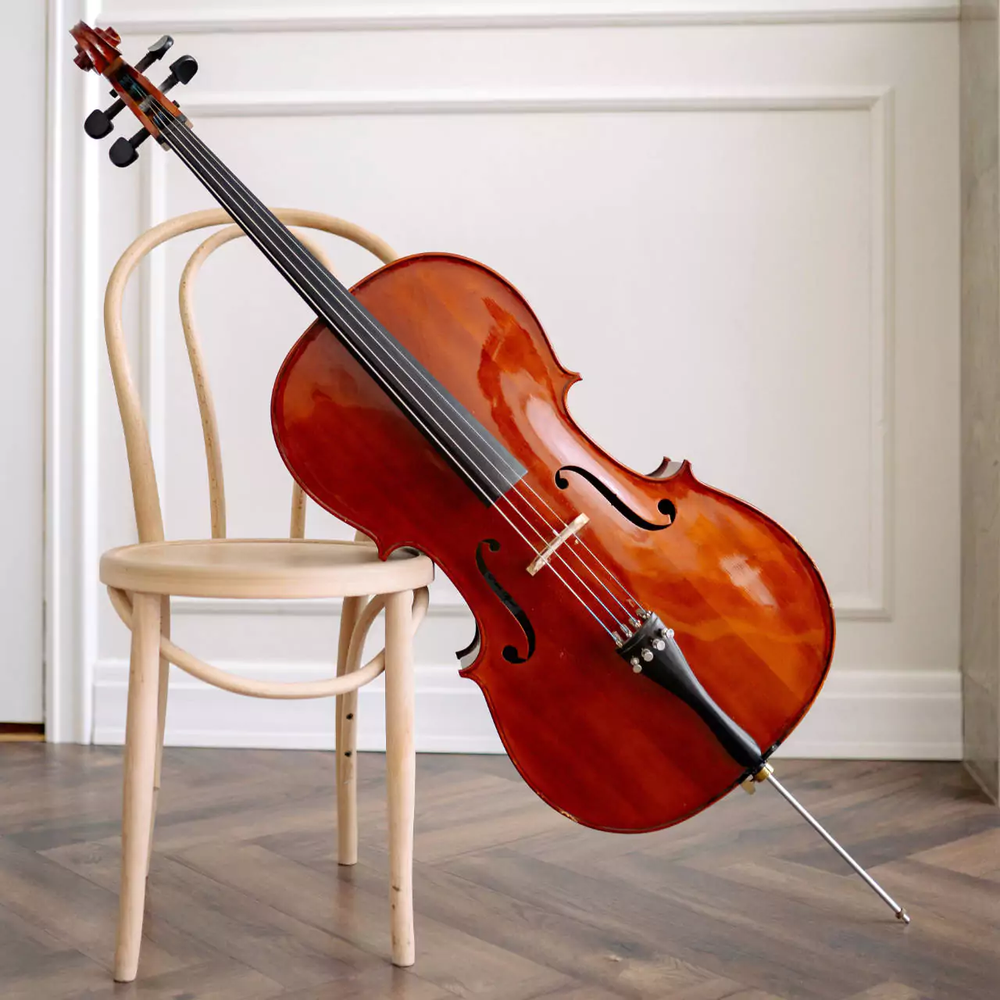
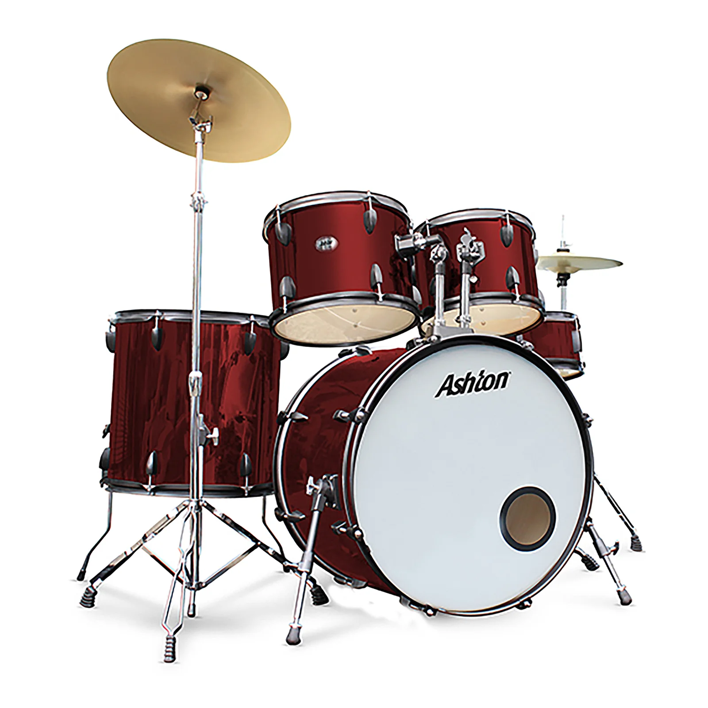

Discover Musical Instruments
Explore the rich world of musical instruments. Here are some of the most popular categories:
String Instruments
-
 Guitar: A string instrument played by plucking or strumming the strings.
Guitar: A string instrument played by plucking or strumming the strings.
-
 Violin: A wooden string instrument played with a bow.
Violin: A wooden string instrument played with a bow.
-
Cello: A larger string instrument played with a bow, similar to the violin.
Wind Instruments
-
 Flute: A wind instrument played by blowing air across the mouthpiece.
Flute: A wind instrument played by blowing air across the mouthpiece.
-
Saxophone: A brass wind instrument that is played with a single-reed mouthpiece.
-
Clarinet: A woodwind instrument with a single-reed mouthpiece.
Percussion Instruments
-
Drums: Played by striking with sticks or hands.
-
 Tambourine: A small percussion instrument with jingles.
Tambourine: A small percussion instrument with jingles.
-
s
 Cymbals: Metal percussion instruments that produce a sharp, crashing sound when struck together.
Cymbals: Metal percussion instruments that produce a sharp, crashing sound when struck together.